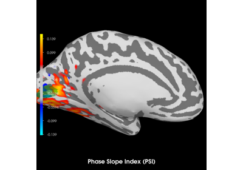

mne_connectivity.phase_slope_index_time#
- mne_connectivity.phase_slope_index_time(data, freqs=None, indices=None, sfreq=None, *, mode='cwt_morlet', average=False, fmin=None, fmax=None, fdecim=1, sm_times=0.0, sm_freqs=1, sm_kernel='hanning', padding=0.0, mt_bandwidth=4.0, n_cycles=7.0, decim=1, n_jobs=1, verbose=None)[source]#
Compute the Phase Slope Index (PSI) connectivity measure over time.
This function computes PSI over time from epoched data. The data may consist of a single epoch.
The PSI is an effective connectivity measure, i.e., a measure which can give an indication of the direction of the information flow (causality). For two time series, one computes the PSI between the first and the second time series as follows:
indices = (np.array([0]), np.array([1])) psi = phase_slope_index_time(data, indices=indices, ...)
A positive value means that time series 0 is ahead of time series 1 and a negative value means the opposite.
The PSI is computed from the coherency (see
spectral_connectivity_time()), details can be found in [1].- Parameters:
- dataarray_like, shape (n_epochs, n_signals, n_times) |
Epochs|EpochsTFR The data from which to compute connectivity. Can be epoched time series data as an array-like or
mne.Epochsobject, or Fourier coefficients for each epoch as anmne.time_frequency.EpochsTFRobject. If time series data, the spectral information will be computed according to the spectral estimation mode (see themodeparameter). If anmne.time_frequency.EpochsTFRobject, existing spectral information will be used and themodeparameter will be ignored.Changed in version 0.8: Fourier coefficients stored in an
mne.time_frequency.EpochsTFRobject can also be passed in as data. Storing multitaper weights inmne.time_frequency.EpochsTFRobjects requiresmne >= 1.10.- freqsarray_like |
None Array-like of frequencies of interest for time-frequency decomposition. Only the frequencies within the range specified by
fminandfmaxare used. Ifdatais an array-like ormne.Epochsobject, the frequencies must be specified. Ifdatais anmne.time_frequency.EpochsTFRobject,data.freqsis used and this parameter is ignored.- indices
tupleof array_like |None Two array-likes with indices of connections for which to compute connectivity. If
None(default), all connections are computed.- sfreq
float|None The sampling frequency. Required if
datais not anmne.Epochsormne.time_frequency.EpochsTFRobject.- mode
'multitaper'|'cwt_morlet' Time-frequency decomposition method (
'cwt_morlet'default). Seemne.time_frequency.tfr_array_multitaper()andmne.time_frequency.tfr_array_morlet()for reference. Ignored ifdatais anmne.time_frequency.EpochsTFRobject.- averagebool
Average connectivity scores over epochs. If
True, output will be an instance ofSpectralConnectivity, orEpochSpectralConnectivityifFalse(default).- fmin
float|tupleoffloat|None The lower frequency of interest. Multiple bands are defined using a tuple, e.g.,
(8., 20.)for two bands with 8 Hz and 20 Hz lower bounds. IfNone(default), the lowest frequency infreqsis used.- fmax
float|tupleoffloat|None The upper frequency of interest. Multiple bands are defined using a tuple, e.g.
(13., 30.)for two band with 13 Hz and 30 Hz upper bounds. IfNone(default), the highest frequency infreqsis used.- fdecim
int Decimation factor in the frequency domain. Selects every Nth frequency bin from the time-frequency decomposition (where N is the value of
fdecim). If 1 (default), no decimation occurs.- sm_times
float Amount of time to consider for the temporal smoothing, in seconds. If 0.0 (default), no temporal smoothing is applied.
- sm_freqs
int Number of points for frequency smoothing. If 1 (default), no spectral smoothing is applied.
- sm_kernel
'square'|'hanning' Smoothing kernel type. For
'hanning', seenumpy.hanning().- padding
float Amount of time to consider as padding at the beginning and end of each epoch in seconds (0.0 default for no padding). See Notes of
spectral_connectivity_time()for more information.- mt_bandwidth
float Product between the temporal window length (in seconds) and the full frequency bandwidth (in Hz; default 4.0). This product can be seen as the surface of the window on the time/frequency plane and controls the frequency bandwidth (thus the frequency resolution) and the number of good tapers. See
mne.time_frequency.tfr_array_multitaper()documentation. Ignored ifdatais anmne.time_frequency.EpochsTFRobject.- n_cycles
float| array_like Number of cycles in the wavelet, either a fixed number or one per frequency (7.0 default). The number of cycles
n_cyclesand the frequencies of interestfreqsdefine the temporal window length. For details, seemne.time_frequency.tfr_array_multitaper()andmne.time_frequency.tfr_array_morlet()documentation. Ignored ifdatais anmne.time_frequency.EpochsTFRobject.- decim
int Decimation factor in the time domain. Selects every Nth time bin from the time-frequency decomposition (where N is the value of
decim). If 1 (default), no decimation occurs.- n_jobs
int Number of connections to compute in parallel. Memory mapping must be activated. Please see the Notes section of
spectral_connectivity_time()for details.- verbosebool |
str|int|None Control verbosity of the logging output. If
None, use the default verbosity level. See the logging documentation andmne.verbose()for details. Should only be passed as a keyword argument.
- dataarray_like, shape (n_epochs, n_signals, n_times) |
- Returns:
- psiinstance of
EpochSpectralConnectivityorSpectralConnectivity Computed connectivity measure. Either a
EpochSpectralConnectivityorSpectralConnectivitycontainer depending on theaverageparameter. The shape of the connectivity dataset is([n_epochs,] n_cons, n_bands):The epoch dimension is present when
average=False, and absent whenaverage=True.When
indicesisNone,n_cons = n_signals ** 2When
indicesis specified,n_con = len(indices[0])n_bandsis the number of frequency bands defined byfminandfmax
- psiinstance of
See also
Notes
Added in version 0.8.
References
Examples using mne_connectivity.phase_slope_index_time#

Compute Phase Slope Index (PSI) in source space for a visual stimulus